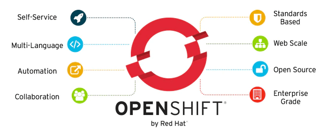
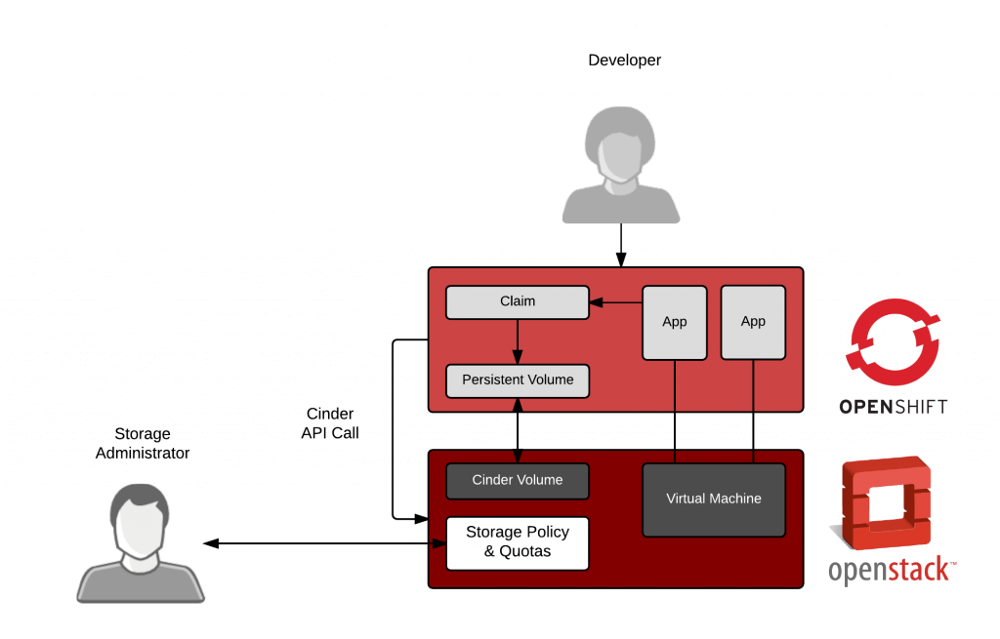
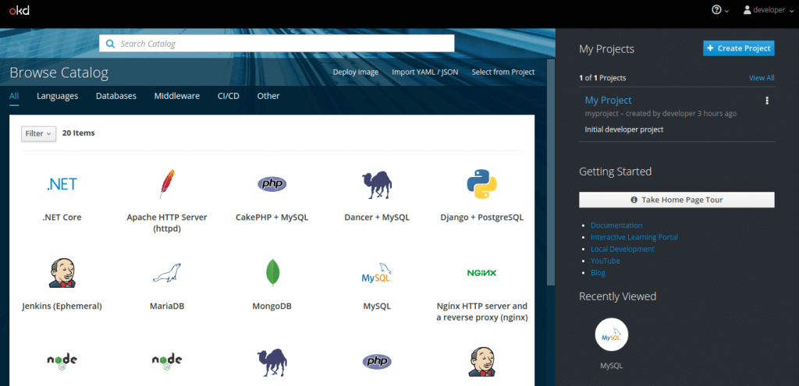
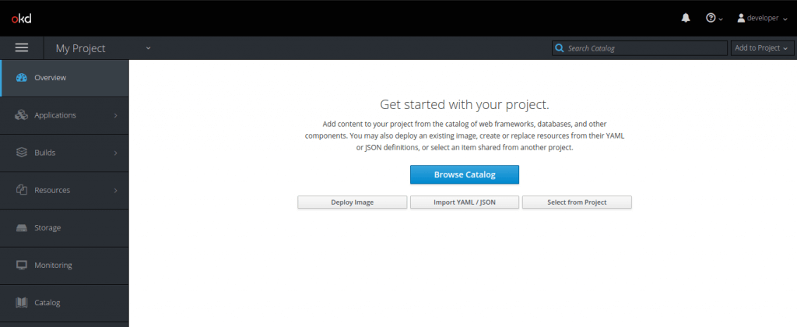
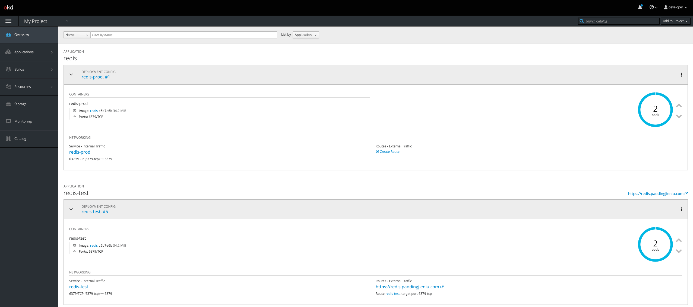
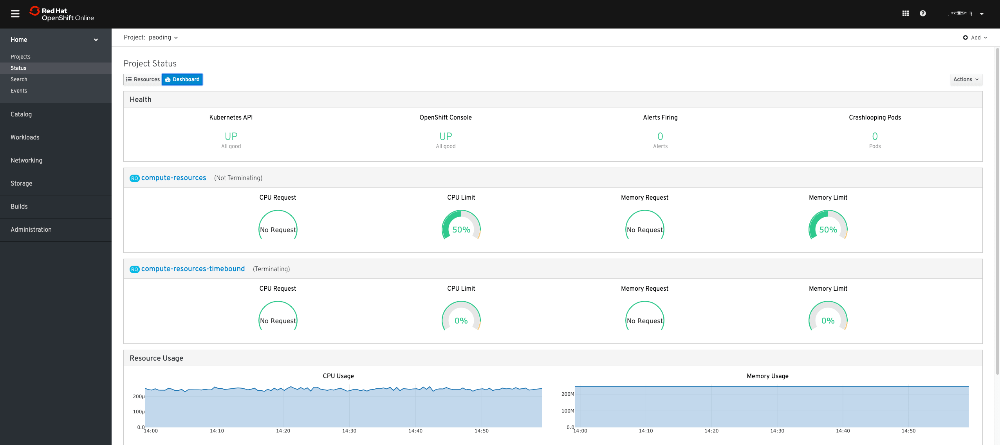

OpenShift为您提供了一个自助服务平台，可以根据需要创建，修改和部署容器化的应用程序。

1. 项目特点介绍
这里使用的是 OpenShift4 最新版

红帽 OpenShift 是一个企业就绪型 Kubernetes 容器平台，可以实现全堆栈自动化运营，以管理混合云和多云部署。红帽 OpenShift 已进行过优化，可以提高开发人员的生产力并推动创新。
- 运营可扩展的容器*
- 红帽
OpenShift包含企业级Linux操作系统、容器运行时，以及各种网络、监控、注册表、身份验证和授权解决方案。实现生命周期管理自动化，以提高安全性、获取量身定制的运营解决方案、简化集群的运营管理并实现应用可移植性。
- 红帽
- 企业级 Kubernetes
- 可供选择的
Kubernetes解决方案多种多样。红帽OpenShift通过聚焦安全，备受支持的Kubernetes平台在业界保持领先 — 还包含了红帽企业Linux基础。我们还可以为需要支持的客户提供专家培训和咨询服务。
- 可供选择的
- 按需使用的应用堆栈
- 使用您喜欢的语言和工具来开发应用，并通过容器镜像来进行部署。只需单击一下，即可使用预先创建的快速启用应用模板来构建应用语言、框架和数据库。
- 编码和推送
- 部署就像单击按钮或输入
git推送命令一样简单。这缓解或解决了很多与构建和部署容器化应用相关的系统管理难题。
- 部署就像单击按钮或输入
- 简化交付
- 借助红帽
OpenShift，您可以实现开发人员工作流程标准化、支持多个环境、实现持续集成和自动化发布管理。
- 借助红帽
2. 使用 CentOS 安装
使用 CentOS7 最新的版本进行安装

- [1] 配置要求
# 建议配置要求
8 vCPUs
32 GB RAM
50 GB free disc space
CentOS7 OS
- [2] 安装 Docker 工具
# Update CentOS 7 system
sudo yum -y update
# Install and Configure Docker
sudo yum install -y yum-utils device-mapper-persistent-data lvm2
sudo yum-config-manager --add-repo https://download.docker.com/linux/centos/docker-ce.repo
sudo yum install -y docker-ce docker-ce-cli containerd.io
# 将当前用户加到docker组里面
sudo usermod -aG docker $USER
newgrp docker
# 创建配置文件
sudo mkdir /etc/docker /etc/containers
# 编辑配置文件
sudo tee /etc/containers/registries.conf<<EOF
[registries.insecure]
registries = ['172.30.0.0/16']
EOF
# 编辑配置文件
sudo tee /etc/docker/daemon.json<<EOF
{
"insecure-registries": [
"172.30.0.0/16"
]
}
EOF
# 重启服务
sudo systemctl daemon-reload
sudo systemctl restart docker
sudo systemctl enable docker
# 设置IP路由转发
echo "net.ipv4.ip_forward = 1" | sudo tee -a /etc/sysctl.conf
sudo sysctl -p
- [3] 配置防火墙
# Configure Firewalld.
DOCKER_BRIDGE=`docker network inspect -f "{{range .IPAM.Config }}{{ .Subnet }}{{end}}" bridge`
sudo firewall-cmd --permanent --new-zone dockerc
sudo firewall-cmd --permanent --zone dockerc --add-source $DOCKER_BRIDGE
sudo firewall-cmd --permanent --zone dockerc --add-port={80,443,8443}/tcp
sudo firewall-cmd --permanent --zone dockerc --add-port={53,8053}/udp
sudo firewall-cmd --reload
- [4] 安装 OC 工具
# Download the Linux oc binary
wget https://github.com/openshift/origin/releases/download/v3.11.0/openshift-origin-client-tools-v3.11.0-0cbc58b-linux-64bit.tar.gz
tar xvf openshift-origin-client-tools*.tar.gz
cd openshift-origin-client*/
sudo mv oc kubectl /usr/local/bin/
# 验证
oc version
- [5] 部署 openshift 集群
# Start OpenShift Origin (OKD) Local Cluster
# Start OKD Cluster listening on the local interface – 127.0.0.1:8443
# Start a web console listening on all interfaces at /console (127.0.0.1:8443).
# Launch Kubernetes system components.
# Provisions registry, router, initial templates, and a default project.
# The OpenShift cluster will run as an all-in-one container on a Docker host.
oc cluster up
oc cluster up --skip-registry-check=true
# 查看状态
oc cluster status
# 登录
oc login -u system:admin
# 常用操作
oc status
oc cluster down
oc cluster up
# 常用操作
oc get svc
oc get nodes
oc describe node <node>
oc new-project test-project
oc new-app deployment-example
oc expose service/deployment-example
- [6] 登录和使用
访问如下地址 https://<IP|Hostname>:8443/console 可以跳转到对应登录页面。如果没有设置 HOST 的话，则使用 https://127.0.0.1:8443/ 地址。
Username: developer
Password: developer

3. 使用 Ubuntu 安装
使用 Ubuntu19.04 最新的版本进行安装

- [1] 安装 docker 工具
# Import Docker GPG key
curl -fsSL https://download.docker.com/linux/ubuntu/gpg | sudo apt-key add -
# add Docker APT repository
sudo add-apt-repository "deb [arch=amd64] https://download.docker.com/linux/ubuntu $(lsb_release -cs) stable"
# install Docker CE
sudo apt update && sudo apt -y install docker-ce
# Add your User account to docker group
sudo usermod -aG docker $USER
- [2] 下载 OpenShift 工具
# Download
wget https://github.com/openshift/origin/releases/download/v3.11.0/openshift-origin-client-tools-v3.11.0-0cbc58b-linux-64bit.tar.gz
# Uncompress downloaded file
tar xvf openshift-origin-client-tools*.tar.gz
cd openshift-origin-client*/
sudo mv oc kubectl /usr/local/bin/
# Verify installation of OpenShift client utility
oc version
# Allow use of Insecure Docker registry
cat << EOF | sudo tee /etc/docker/daemon.json
{
"insecure-registries" : [ "172.30.0.0/16" ]
}
EOF
# Restart Docker service after adding the file
sudo systemctl restart docker
- [3] 启动集群服务
# 直接启动
oc cluster up
# 自定义配置
# oc cluster up --public-hostname=192.168.10.10
oc cluster up --routing-suffix=<ServerPublicIP>.xip.io \
--public-hostname=<ServerPulicDNSName>
# 登录
oc login -u system:admin
- [4] 启动 Pod 问题处理
# 部署之后启动Pod时，如果遇到权限问题
# 这是因为OpenShift默认不允许Root用户来启动程序
# 可以使用如下命令，对创建的project赋权
oc adm policy add-scc-to-user anyuid -z <project_name> -n rook
oc adm policy add-scc-to-user anyuid -z <project_name> -n rook-system
4. 功能项目展示
收费版本的 OpenShift 就是强哈 👍
- OKD

- OpenShift

5. 常见问题处理
遇到问题，记得及时记录哈
- [1] 创建 Pod 提示没有目前权限
# 提示信息
mkdir: cannot create directory ‘/data/docs’: Permission denied
# 处理方式
# 需要切换到管理员用户才能够授权
oc login -u system:admin
oc adm policy add-scc-to-user anyuid -z default -n <namespace>
- [2] 系统磁盘资源不足导致服务无法启动
# 提示信息
使用oc命令启动OKD服务，但是一直提示各种报错。从网上搜索解决方法，但是没有能够解决该问题。
# 处理方式
后来才发现，是在启动的时候，会判断磁盘的百分比空间(百分比，好坑呀)。
因为系统的磁盘高于了90%，导致无法启动，但是提示的报错信息并不是说空间不足。
使用K8S的时候，同样也会有这问题，如果都没资源pod会被驱逐。